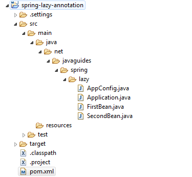

In this short article, we’ll discuss Spring’s @Lazy annotation with an
example.
By default, the Spring IoC container creates and initializes all singleton beans at application startup. However, we can prevent this pre-initialization by using the @Lazy annotation.
The @Lazy annotation may be used in any class directly or indirectly annotated with @Component or in methods annotated with @Bean.
In this example, we will use a Java-based configuration(using @Configuration and @Bean).
Let's create an example to demonstrate using @Lazy annotation in a spring
application.
Create a simple Maven project using your favourite IDE. Refer to the section below for the packaging structure. If you are new to Maven, read the article How to Create a Simple Maven Project.
The below diagram shows a project structure for your reference -
Note that Spring Framework 6 requires Java 17 or later version:
<!-- https://mvnrepository.com/artifact/org.springframework/spring-core -->
<dependency>
<groupId>org.springframework
<artifactId>spring-core
<version>6.1.8
</dependency>
<!-- https://mvnrepository.com/artifact/org.springframework/spring-context -->
<dependency>
<groupId>org.springframework
<artifactId>spring-context
<version>6.1.8
</dependency>
package net.javaguides.spring.lazy;
public class FirstBean {
public FirstBean() {
System.out.println("Inside FirstBean Constuctor");
}
public void test() {
System.out.println("Method of FirstBean Class");
}
}
package net.javaguides.spring.lazy;
public class SecondBean {
public SecondBean() {
System.out.println("Inside SecondBean Constuctor");
}
public void test() {
System.out.println("Method of SecondBean Class");
}
}
Declare the above beans in the Java-based configuration class.
package net.javaguides.spring.lazy;
import org.springframework.context.annotation.Bean;
import org.springframework.context.annotation.Configuration;
import org.springframework.context.annotation.Lazy;
@Configuration
public class AppConfig {
@Lazy(value = true)
@Bean
public FirstBean firstBean() {
return new FirstBean();
}
@Bean
public SecondBean secondBean() {
return new SecondBean();
}
}
Let's create a main class and run an application.
package net.javaguides.spring.lazy;
import org.springframework.context.annotation.AnnotationConfigApplicationContext;
public class Application {
public static void main(String[] args) {
AnnotationConfigApplicationContext context = new AnnotationConfigApplicationContext(AppConfig.class);
FirstBean firstBean = context.getBean(FirstBean.class);
firstBean.test();
context.close();
}
}
Inside SecondBean Constuctor
Inside FirstBean Constuctor
Method of FirstBean Class
As we can see, bean secondBean is initialized by the Spring container while
bean firstBean is initialized explicitly.